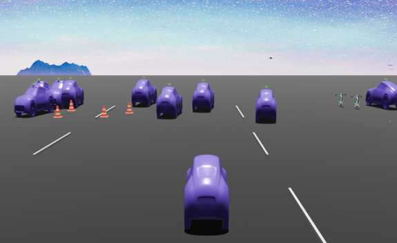
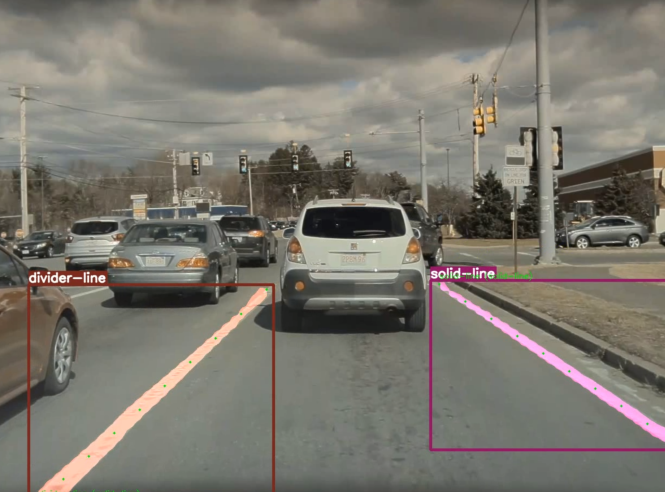
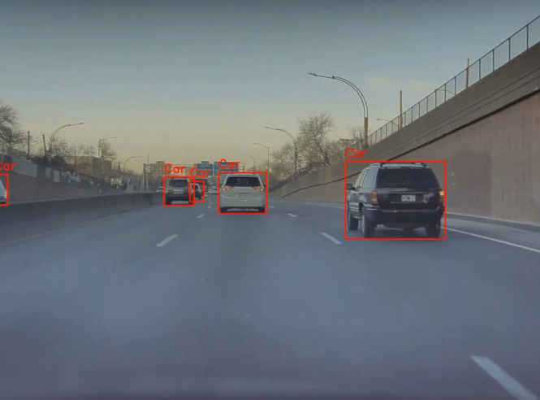
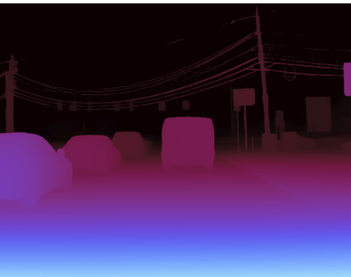
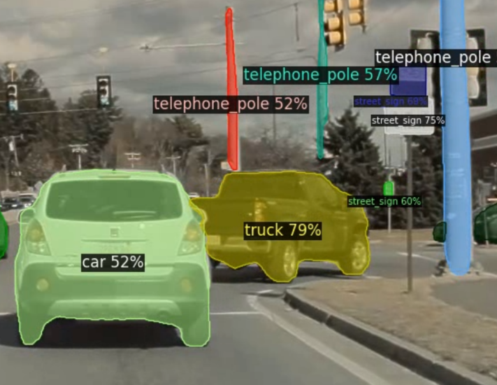
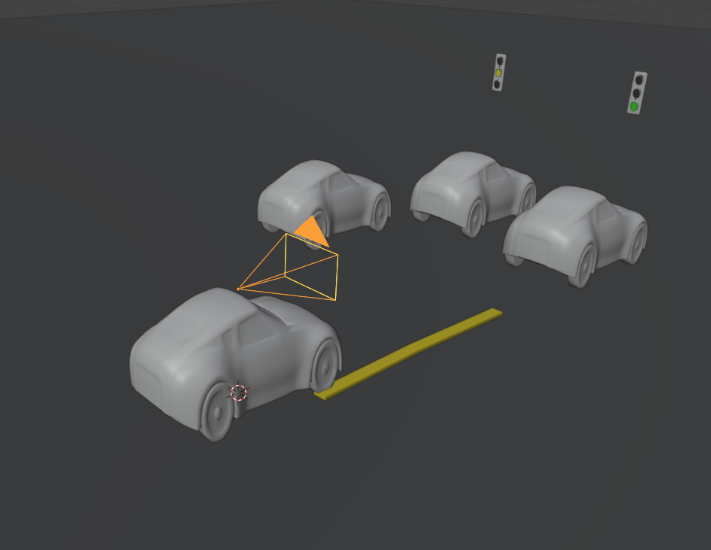
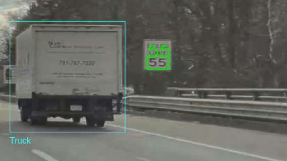
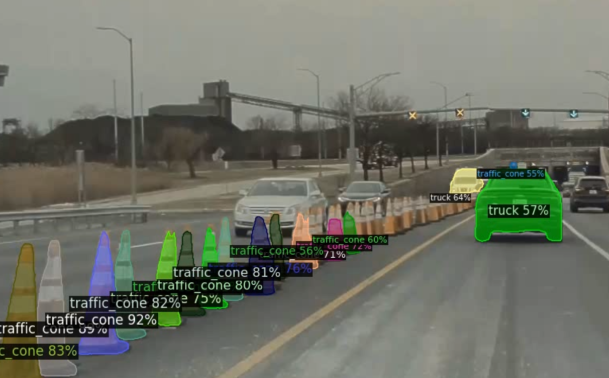

Detect
Mask R-CNN, YOLO, DETIC, YOLO3D, EasyOCR, and RAFT are used for lanes, vehicles, lights, signs, pose, text, and motion.
RBE 549 · Autonomous Driving Perception · Blender Rendering
A self-driving vehicle visualization system that transforms front-camera driving videos into structured perception data and renders a 3D driving scene with lanes, vehicles, traffic lights, pedestrians, signs, depth, motion, brake lights, and indicators.

Final rendered scene from perception outputs
Problem Statement
Autonomous driving systems need to understand more than just “there is a car.” They need lanes, object classes, vehicle pose, traffic-light state, road signs, pedestrian position, brake lights, indicators, and motion direction.
The challenge is that these outputs usually come from different models and formats. Einstein Vision solves this by merging detections into a unified JSON representation, converting 2D detections into 3D coordinates, and rendering the complete scene in Blender.
Solution
The system detects road elements, stores them frame-by-frame, estimates depth, and creates a visual dashboard-style scene for easier interpretation.
Mask R-CNN, YOLO, DETIC, YOLO3D, EasyOCR, and RAFT are used for lanes, vehicles, lights, signs, pose, text, and motion.
Outputs are assembled into a single 2D JSON containing objects, lanes, signs, vehicle states, and traffic-light states.
Depth Anything V2 and camera intrinsics convert object centroids and lane points into 3D scene coordinates.
Blender places assets, lanes, traffic lights, cars, cones, pedestrians, and state indicators into a navigable 3D scene.
Videos
These videos are embedded directly in the website and show the rendered output generated from the perception pipeline.
Shows the multi-frame Blender visualization with the ego vehicle, surrounding vehicles, cones, lanes, and object placement across time.
Demonstrates the rendered scene style using the 3D JSON output, Blender assets, road geometry, and detected traffic elements.
Pipeline
Front-view driving footage is processed frame-by-frame.
Lane detection, vehicle detection, traffic-light state, road signs, speed-limit OCR, vehicle pose, pedestrian pose, and optical flow are extracted.
Different outputs are merged into one clean structure with frame IDs, object classes, 2D boxes, states, and metadata.
A monocular depth map is produced and normalized to approximate real-world distances.
Camera intrinsics project object centroids from image coordinates into 3D coordinates.
3D assets are placed into a scene, rendered frame-by-frame, and exported as images or videos.
Detection Examples
Lane masks, vehicle bounding boxes, depth maps, DETIC segmentation, cones, speed signs, and traffic objects are converted into a format that Blender can understand.




Gallery
Each visual represents one part of the perception-to-rendering pipeline.



Why this matters
Instead of looking at many separate model outputs, Einstein Vision creates one interpretable scene. This makes debugging perception, checking object states, and communicating the system behavior much easier.
Merges detections into unified 2D JSON.
Projects 2D detections into 3D using depth and camera calibration.
Creates the Blender road scene, assets, lights, lanes, and objects.
Renders one frame or a full video sequence.